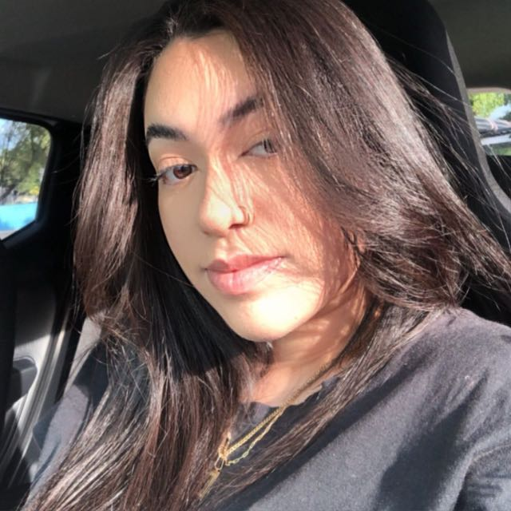
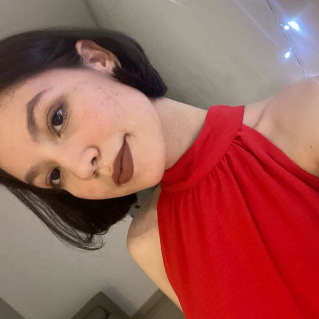
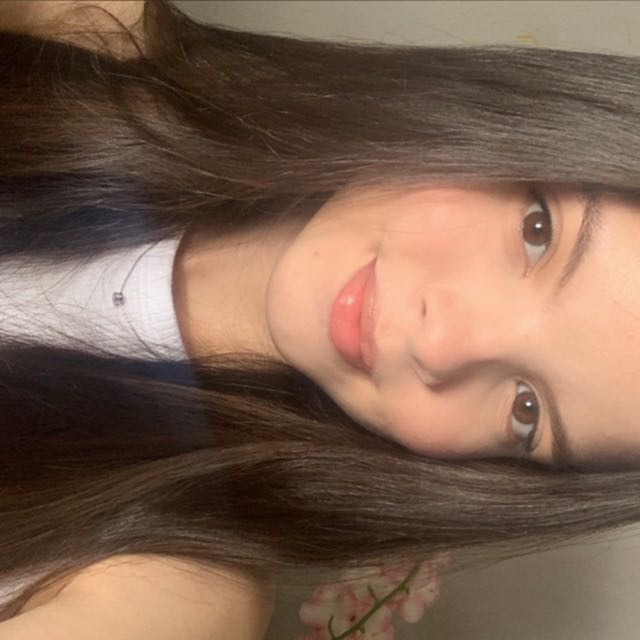
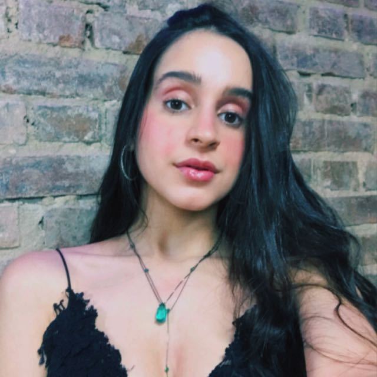

A revista VENEZA é um projeto dos estudantes do curso de Jornalismo da UFPE que tem como foco principal falar sobre questões que movimentam o espaço urbano do Recife, nas suas mais diversas formas, retratando questões ambientais, geográficas, políticas e culturais. Uma revista do Recife para os recifenses, mas que não se limita à blocos de concreto; cria pontes e conexões que trazem identidade e uma persona própria para tudo que é feito aqui dentro. Nós queremos ser o cartão postal para todo aquele que assim como nós, estudantes, ocupamos esse lugar de cidadão recifense. Uma revista feita e pensada para todos, assim como deve ser a cidade.
Sobre nós
-

Alice Girão
Estudante de Jornalismo na UFPE, apaixonada por política e economia
-
Beatriz Karoline
Estudante de Engenharia na UFPE, apaixonada por competições e aprender cada vez mais
-

Emilly Cristine
Estudante de Jornalismo na UFPE e Pesquisadora na área de Jornalismo de Dados
-
Laura Martins
Estudante de jornalismo na UFPE, e amante de esportes e literatura
-

Lívia do Nascimento Silva
Estudante de Jornalismo na UFPE, apaixonada por esportes e pela língua francesa
-

Marina Lamenha
Estudante de Jornalismo na UFPE